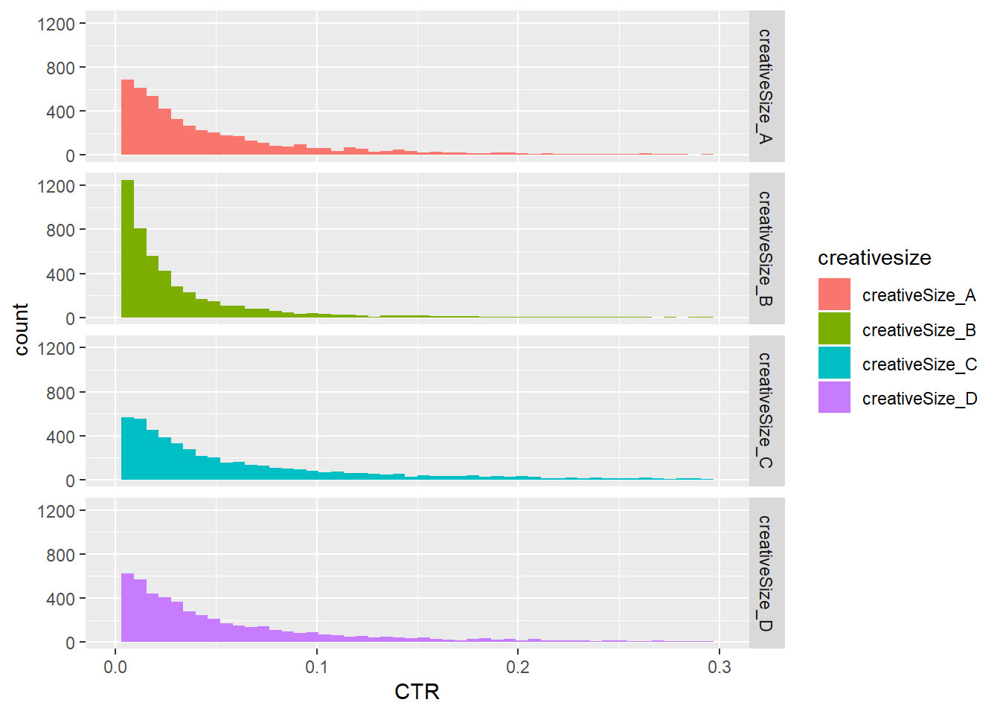

library(tidyverse)## -- Attaching packages -------------------------------------------------------------------------------------------------------------- tidyverse 1.2.1 --## v ggplot2 3.1.1 v purrr 0.3.2
## v tibble 2.1.1 v dplyr 0.8.0.1
## v tidyr 0.8.3 v stringr 1.4.0
## v readr 1.3.1 v forcats 0.4.0## -- Conflicts ----------------------------------------------------------------------------------------------------------------- tidyverse_conflicts() --
## x dplyr::filter() masks stats::filter()
## x dplyr::lag() masks stats::lag()Create a simulated report for digital display ads.
n_clients <- 3 # Clients
n_campaigns <- 5 # Campaigns per Client
n_placements <- 4 # Placements per Campaign
n_creativesizes <- 4 # Creative sizes per Placement
n_days <- 90 # Days of Activity
# Impressions
# Clicks
# Costs
n_totalrows <- n_clients * n_campaigns * n_placements * n_creativesizes * n_days
tt <- as_tibble(matrix(nrow = n_totalrows, ncol = 8), .name_repair = "universal")## New names:
## * `` -> ...1
## * `` -> ...2
## * `` -> ...3
## * `` -> ...4
## * `` -> ...5
## * ... and 3 more problemscolnames(tt) <- c("client", "campaign", "placement", "creativesize", "day", "impressions", "clicks", "cost")
vec_clients <- paste("client", LETTERS[1:n_clients], sep = "_")
list_campaigns <- vector(mode = "list", length(vec_clients))
for (i in 1:length(vec_clients)) {
list_campaigns[[i]] <- paste(vec_clients[i], "campaign", round(runif(n_campaigns, 10000, 99999)), sep = "_")
}
vec_campaigns <- do.call(c, list_campaigns)
list_placements <- vector(mode = "list", length(vec_campaigns))
for (i in 1:length(vec_campaigns)) {
list_placements[[i]] <- paste(vec_campaigns[i], "placement", round(runif(n_placements, 10000, 99999)), sep = "_")
}
vec_placement <- do.call(c, list_placements)
list_creativesizes <- vector(mode = "list", length(vec_placement))
for (i in 1:length(vec_placement)) {
list_creativesizes[[i]] <- paste(vec_placement[i], "creativeSize", LETTERS[1:n_creativesizes], sep = "_")
}
vec_creativesizes <- do.call(c, list_creativesizes)
list_days <- vector(mode = "list", length(vec_creativesizes))
for (i in 1:length(vec_creativesizes)) {
list_days[[i]] <- paste(vec_creativesizes[i], "day", 1:n_days, sep = "_")
}
vec_days <- do.call(c, list_days)
tt$client <- substr(vec_days, start = 1, stop = 8)
tt$campaign <- substr(vec_days, start = 10, stop = 23)
tt$placement <- substr(vec_days, start = 25, stop = 39)
tt$creativesize <- substr(vec_days, start = 41, stop = 54)
tt$day <- substr(vec_days, start = 60, stop = 61)
list_impressions <- vector(mode = "list", length(vec_creativesizes))
for (i in 1:length(vec_creativesizes)) {
list_impressions[[i]] <- round(rbeta(n_days, 1.5, 10000) * 1e7)
}
vec_impressions <- do.call(c, list_impressions)
tt$impressions <- vec_impressions
list_clicks <- vector(mode = "list", length(vec_creativesizes))
for (i in 1:length(vec_creativesizes)) {
list_clicks[[i]] <- round(rbeta(n_days, 1.5, 10000) * 1e5)
}
vec_clicks <- do.call(c, list_clicks)
tt$clicks <- vec_clicks
tt$cost <- tt$impressions * rbeta(length(vec_creativesizes), 10, 1e9) * 3e5
for (i in unique(tt$creativesize)) {
tt$clicks[tt$creativesize == i] <- tt %>%
filter(creativesize == i) %>%
mutate(clicks = round(clicks * runif(1, 0.5, 5))) %>%
pull(clicks)
}
tt$clicks[tt$clicks >= tt$impressions] <- 1
for (i in unique(tt$creativesize)) {
tt$cost[tt$creativesize == i] <- tt %>%
filter(creativesize == i) %>%
mutate(cost = round(cost * runif(1, 0.5, 5))) %>%
pull(cost)
}tt$CPM <- tt$cost / tt$impressions * 1000
tt$CTR <- tt$clicks / tt$impressionstt %>%
ggplot(aes(x = CTR)) +
geom_histogram(aes(fill = creativesize), bins = 50) +
xlim(c(0, 0.3)) +
facet_grid(creativesize ~ .)## Warning: Removed 878 rows containing non-finite values (stat_bin).## Warning: Removed 8 rows containing missing values (geom_bar).
tt %>%
ggplot(aes(x = CPM)) +
geom_histogram(aes(fill = creativesize), bins = 50) +
# xlim(c(0, 0.3)) +
facet_grid(creativesize ~ .)tt## # A tibble: 21,600 x 10
## client campaign placement creativesize day impressions clicks cost
## <chr> <chr> <chr> <chr> <chr> <dbl> <dbl> <dbl>
## 1 clien~ campaig~ placemen~ creativeSiz~ 1 796 13 13
## 2 clien~ campaig~ placemen~ creativeSiz~ 2 3478 85 36
## 3 clien~ campaig~ placemen~ creativeSiz~ 3 1250 28 19
## 4 clien~ campaig~ placemen~ creativeSiz~ 4 2308 72 31
## 5 clien~ campaig~ placemen~ creativeSiz~ 5 1132 22 19
## 6 clien~ campaig~ placemen~ creativeSiz~ 6 277 19 4
## 7 clien~ campaig~ placemen~ creativeSiz~ 7 203 69 2
## 8 clien~ campaig~ placemen~ creativeSiz~ 8 1036 47 12
## 9 clien~ campaig~ placemen~ creativeSiz~ 9 2820 13 19
## 10 clien~ campaig~ placemen~ creativeSiz~ 10 1160 9 11
## # ... with 21,590 more rows, and 2 more variables: CPM <dbl>, CTR <dbl>